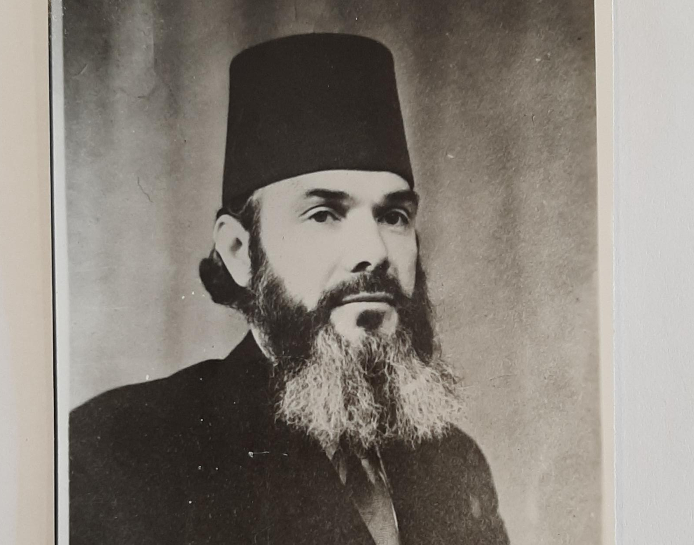
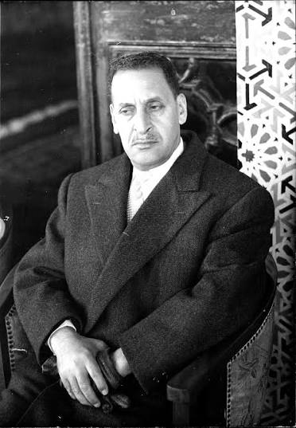
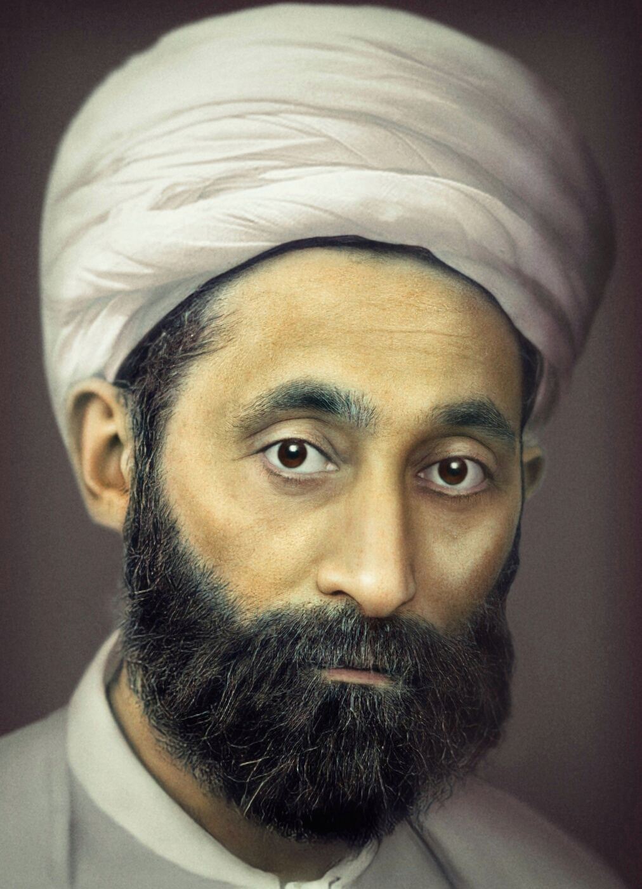
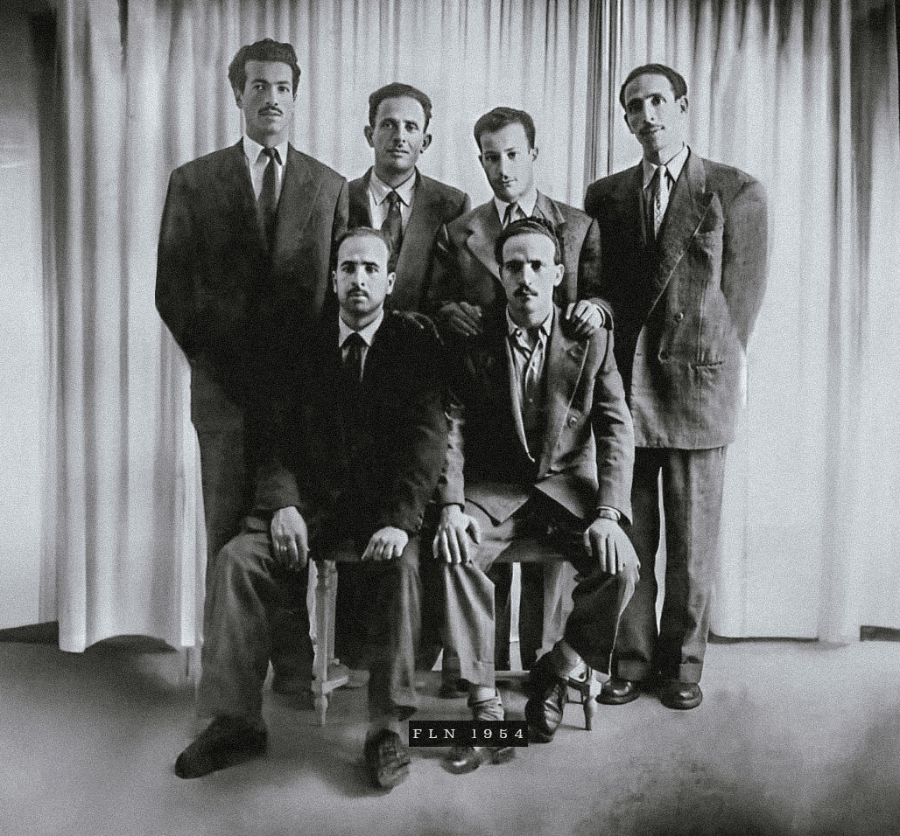

Le territoire, la place de l’islam, et ce qui, au fond, fait nation. Sur ces trois points, aucun accord pendant trente ans.
Un même refus de l’ordre colonial. La question n’est pas de désigner qui avait raison, mais de comprendre comment un seul a fini par parler au nom de tous.
Qui a l’autorité pour dire ce qu’est la nation, et pour parler en son nom ?
L’hypothèseUne nation est un enjeu de pouvoir. Avant même qu’existe un État algérien, des organisations se disputent le droit de dire ce qu’elle est. Ce que nous suivons ici, c’est la lutte pour ce monopole : devenir la voix légitime de l’Algérie.
Après Fanon, qui pensait la nation en général, nous redescendons au ras du sol : des sigles, des congrès, des dates, des scissions. Quatre courants.

Interdite, reconstituée, puis dissoute par le Front populaire. Messali fonde alors le Parti du peuple algérien.
Le Mouvement pour le triomphe des libertés démocratiques prend le relais du PPA.
On retiendra Messali comme le père du nationalisme algérien, le premier à dire tout haut ce que d’autres n’osaient pas. Benjamin Stora l’a montré : celui qui a inventé la revendication d’indépendance a été rayé du récit par ceux qui l’ont réalisée.

«Si j’avais découvert la nation algérienne, je serais nationaliste. Je ne mourrais pas pour la patrie algérienne, parce que cette patrie n’existe pas. Je ne l’ai pas découverte. J’ai interrogé l’histoire, j’ai interrogé les vivants et les morts, j’ai visité les cimetières : personne ne m’en a parlé.»
Ce qu’Abbas constate, c’est l’absence d’une nation déjà constituée comme fait politique. Il dit autre chose que l’inexistence du peuple algérien.
Il rédige le Manifeste du peuple algérien et réclame l’autonomie.
En avril, cet homme qui avait cherché la France rejoint le FLN.

Le PCA se détache lentement du Parti communiste français. Congrès constitutif à Alger, délégués indigènes et européens mêlés.
La nation se définit par la lutte des classes, en laissant de côté l’ethnie et la foi. Le prolétaire algérien et le prolétaire français ont le même adversaire : le capital.
Maurice Thorez forge la thèse d’une nation algérienne en formation, faite de vingt races qui se fondent dans le creuset : une nation pas encore là, qui se construirait dans l’union avec la France.
Le Parti reste longtemps ambigu sur l’indépendance. Mais il occupe une place que personne d’autre ne tient : là où les autres pensent la nation par le sang ou par la foi, lui la pense par la classe.
L’islam est le socle même de la nation. Pas d’Algérie sans lui.
Un ciment identitaire face aux colonisateurs, au service d’un projet d’abord politique.
Formé à la laïcité, il range le religieux du côté de l’intime.
La religion passe derrière la question sociale.
L’islam est un horizon partagé par tous, mais sa place reste disputée : il rassemble et sépare dans le même mouvement.
Militant du PPA-MTLD puis du FLN, Lacheraf écrit en intellectuel critique de son propre camp.
La nation algérienne s’est faite d’abord dans les campagnes, autant que dans les congrès des élites urbaines. Cette paysannerie longtemps négligée a été le réservoir profond de la résistance.
Tous refusent l’ordre colonial et l’humiliation de l’indigénat, qui frappe tous les Algériens quel que soit leur projet. Ce refus commun rendra possible, un jour, leur rassemblement.
Ce rassemblement se fera par autre chose que le débat. C’est le cœur politiste du module.
Ce qui départage
Ce qui départage ces courants, c’est un rapport de force. La qualité de leurs arguments vient après.
La fracture touche surtout le courant de Messali. Durant l’été 1954, le Mouvement pour le triomphe des libertés démocratiques éclate en trois morceaux.
D’un noyau d’activistes pressés naît le Front de libération nationale, qui déclenche l’insurrection le 1er novembre.

« On adhère, ou l’on est un ennemi. »
Dans la nuit du 28 au 29 mai 1957, une unité de l’Armée de libération nationale extermine au moins 300 hommes d’un village réputé favorable au Mouvement national algérien.
Quatre voix discutaient la nation. Une seule finira par parler en son nom, et par les armes.
La nation, dans ces années, est un enjeu de pouvoir : la lutte pour dire légitimement « nous ». Le FLN l’a imposée par le ralliement forcé, et à Melouza, par le massacre.
Et elle a été fermée de l’intérieur, par des Algériens, sur d’autres Algériens.
Celle du droit, de la loi, de la citoyenneté réclamée : celle que Ferhat Abbas a tenue ouverte pendant vingt ans. Celle-là, quelqu’un d’autre l’a refermée.